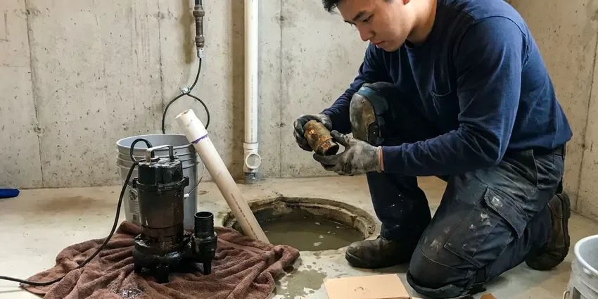
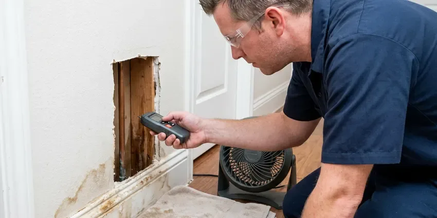

Rooter Services in Spartanburg, SC
Rooter service in Spartanburg, SC from technicians who read the cable and know when a pipe is in trouble, so older lines come through intact.
- Same-Day Drain Clearing
- Cable Sized to Your Pipe
- Commercial Rooter Machines
- Trained Technicians

Get Your Line Cut Clear in Spartanburg, SC.
Kitchen line, toilet or main sewer, we bring the cable and cutter that fit the pipe and open it in one visit.
Root Cutting for Spartanburg, SC Homes and Businesses
KBN Plumbing rooter technicians in Spartanburg deal with dense root balls, hardened grease and scale-crusted cast iron every week. We match cable size and cutting head to the pipe, so the line gets cleared without gouging the walls.
Some of what we do:
- Hydro jetting for grease and mineral buildup
- High-Pressure Jetting Service
- Main line clearing for homes and commercial buildings

Additional Plumbing Maintenance Services in Spartanburg, SC
Our maintenance and specialty plumbing services in Spartanburg, SC catch small problems before they become emergencies.




Sump Pump Maintenance near Spartanburg


Customers
Why Choose KBN Plumbing for Rooter Services in Spartanburg, SC?
We carry cameras and locators on every rooter truck. That lets us find a clog's exact depth and distance from the cleanout before any digging in your yard gets discussed. Digging is rare.
- Nights and Weekends, Sewers back up at bad hours. KBN Plumbing takes evening and weekend rooter calls.
- Pipe Protection, Rental machines kink and gouge. We control speed and feed so the pipe comes through intact.
- Deep Line Clearing, Our cables reach clogs 100 feet or more from the cleanout, far past what a plunger or hand snake can touch.
Citywide Coverage
Our service area covers all of Spartanburg and the towns around it. Red clay dominates much of the upstate, while the coastal plain of South Carolina has sandy soil and a high water table that affects drainage and digging. When the ground moves, joints separate, and roots and sediment follow. It is a common call.
Experienced Team
Our KBN Plumbing team knows South Carolina common drain materials and how each one fails. Orangeburg pipe, old cast iron and clay all show up on older lots. A camera shows which one you have. Knowing the material tells us which cutter to run and whether the line is worth cleaning or is close to the end of its life.
Safety-First Approach
Code and safety come first on every rooter call KBN Plumbing runs. We follow Spartanburg, SC plumbing codes for every cleanout, trap and repair the camera finds. Sewage gets contained. If the job turns into a pipe repair, we pull the permit and schedule the inspection rather than leaving that to you.
Trusted Certified Spartanburg Plumbing Services Professionals
At KBN Plumbing, we are proud to offer certified plumbing services throughout Spartanburg, SC. Those papers on the wall mean something. Our plumbers hold recognized industry credentials, and they follow strict safety and quality rules on every repair, installation and maintenance call we run.
Call Us Now PHCC Plumbing Contractor Recognition
PHCC Plumbing Contractor Recognition Better Business Bureau (BBB) Accreditation
Better Business Bureau (BBB) Accreditation Angi Certified Pro
Angi Certified Pro ISO 9001 Quality Management Certification
ISO 9001 Quality Management CertificationSewer and Drain Rooting in Spartanburg, SC
Main Line Rooter Service Through Cleanouts in Spartanburg, SC
A cleanout is a capped pipe that gives us a straight shot into the main. We run cable from there to the city connection so the entire line gets cut, not just the first few feet. Homes without one can have a cleanout added. Running water afterward shows us the line is flowing at full rate.

Emergency Rooter Services in Spartanburg, SC
Sewage in a floor drain on a Saturday night does not wait for Monday. KBN Plumbing takes emergency rooter calls in Spartanburg, SC and sends a truck loaded with cable, cutters and a jetter. Most backups clear on that first visit. If sewage got onto flooring, we help contain it and give you names of cleanup crews.
Commercial Rooter Service in Spartanburg
Restaurants, apartment buildings, schools and offices load their drains all day. Big mains, kitchen waste lines and floor drains get commercial machines and heavier cable. Maintenance plans cut emergency calls. We can work after closing so tenants and customers are not bothered by the noise.
Sewer Root Removal in Spartanburg
Roots cause more main sewer clogs than anything else on older streets. They work into small gaps at clay and cast iron joints and thicken into mats that snag paper and grease. We cut them back with a root saw on a heavy cable. Most of these lines need cutting every year or two.
Residential Drain Cleaning in Spartanburg
Tub drains collect hair, kitchen drains collect grease, and toilets collect whatever got flushed. KBN Plumbing clears all of them, starting with a hand auger for a trap clog and stepping up to an electric machine for anything past the wall. We pull the trap when that is faster. You see what we pulled, which helps you decide if it was a one-off or something to watch.
Rooting vs. Pipe Repair in Spartanburg, SC
Rooting makes sense when the pipe is sound and just clogged. When roots return in months, or the cable hangs on a broken joint every time, repairing that section starts to save money. A camera answers the question. Rooting usually runs a few hundred dollars, and lining or replacing a section costs more up front and stops the repeat visits.
Clog Prevention & Maintenance in Spartanburg, SC
Grease belongs in a can, not the sink. Wipes marked flushable still do not break down fast enough for a sewer line. KBN Plumbing can recommend strainers, a cleanout where one is missing, and a rooting schedule for your Spartanburg, SC home based on what came back on the cable. Small habits make a big difference.

Camera Inspection for Rooter Services in Spartanburg, SC
On a hard or repeat clog, KBN Plumbing sends a camera down after the cable. The monitor shows distance from the cleanout and, with a locator, the depth at that spot. No more guessing. If the pipe is broken, you know exactly where, so any repair in Spartanburg, SC is one small dig rather than a trench across the yard.
Rooter Service Near Me in Spartanburg, SC
Our rooter trucks are based nearby, so we can respond quickly when drains back up. Cable, cutter heads and a jetter ride on every truck. That setup means most lines in Spartanburg get cleared in a single trip, without a second visit for a bigger machine.
Neighbors in Spartanburg call us for the same few reasons, roots in old clay, grease in kitchen lines and wipes in the main. We have seen every version of these clogs. Every truck has cable long enough to reach the street from the cleanout on most lots, and a camera if the cause is unclear.
KBN Plumbing at a Glance
- Fully licensed plumbing team covering Spartanburg, SC
- Same-day appointments and 24/7 emergency response
- Upfront, flat-rate pricing before work begins
- 4.8-star rated by 596+ South Carolina customers
Spartanburg Map
Spartanburg Information
- Population
- 39,040
- Area codes
- 864/828/704
- Service area
- Spartanburg and communities within 40 miles
- Nearby
- Greer, Greenville, Rock Hill, Fort Mill
Grease, wipes and roots cause most stopped lines in Spartanburg, SC, and a rooter machine with the right cutter clears all three to the full pipe diameter.
Expert Services
Call KBN Plumbing for honest, reliable plumbing from people who know the trade in Spartanburg, SC.
Our Specialized Plumbing Services in Spartanburg, SC
At KBN Plumbing, you get every kind of plumbing service from one company across Spartanburg, SC. From leak detection to full system installs, our team works fast and charges fair prices on homes and commercial properties alike. Explore our core services below:


Our Rooter Process in Spartanburg, SC
Here is what happens when you call us for rooter service.
Call and Describe It
Call KBN Plumbing at (864) 588-3813 and tell us which drains are slow and whether water is backing up. We set a time for a tech to come to your Spartanburg property.
Find the Clog
The tech checks the fixtures, finds the cleanout and, if needed, runs a camera. You get a firm price before work starts.
Clear the Line
We run the cable and cutter sized to the pipe, or jet it when grease calls for it, then flow test the line before finishing.
Frequently Asked Questions About Rooter Services in Spartanburg
Rooting a sink, tub or toilet typically runs $125 to $300. Main sewer rooting through a cleanout generally runs $200 to $500. Adding a jetting pass brings the total to about $450 to $1,000, depending on line length and how much grease is in it. After-hours calls cost more.
Clay or older cast iron lines with trees nearby usually need rooting every 12 to 24 months. Newer PVC lines may go years without it. A camera look can set the timing. How quickly roots return after the last cut tells us if yearly or every-other-year service fits your line.
Yes, most rooter jobs come with a limited guarantee. The terms depend on the line and what we found, and they are written on your estimate. Roots are the exception. Broken pipe or heavy roots can shorten the guarantee because the roots keep coming back until the pipe is repaired.
Every rooter job from KBN Plumbing carries a guarantee for a set period on the line we cleared. The terms are explained before work begins. Coverage is specific. Should that line clog again during the guarantee window, the return visit is free.
We run RIDGID, Spartan and Gorlitz augers, plus sewer cameras and jetters from the same tier of commercial makers. These machines take daily abuse and keep working. Brand matters less than setup. Even a top machine can hurt a pipe with the wrong head, so picking the cutter gets as much attention as the machine.
No permit is required for routine rooting. Installing a new cleanout, digging up a broken section or replacing the sewer lateral usually does require a plumbing permit and an inspection. Permits for repair work are on us.
It can be, so we prepare for it. We lay cloths from the entry to the drain and keep buckets and rags at the cleanout. Cables come out wet. It gets wiped as it comes out, and debris goes into bags before we clean up and leave.
No, it cuts them back but leaves the joint open. Roots will grow back through the same gap. Root treatments slow regrowth for a while, and pipe lining or replacing the bad section of sewer gives a permanent fix.
Hear From Customers Who Hired Our Plumbing Experts

Marcus H.
Grease from the fryer line kept clogging the kitchen drain at my diner. KBN Plumbing hydro jetted the line after closing, showed me the buildup on camera, and set us up on a quarterly cleaning so it does not catch us on a Friday again.
Drain Cleaning · Columbia, SC
Nathan E.
Our tankless heater kept throwing an error code and shutting off mid shower. The tech flushed the heat exchanger, which was full of scale, and replaced a bad flow sensor. Hot water has been steady for half a year now.
Water Heater Repair · Spartanburg, SC
Laura S.
Our 40 gallon tank started leaking from the bottom after thirteen years. The tech hauled the old one out, set a new unit with a fresh expansion tank, and had hot water running in about four hours. He took the old tank with him too.
Water Heater Replacement · Rock Hill, SC
Greg S.
I manage a small strip center with six tenants. KBN Plumbing handles our annual backflow testing and fixed a recurring clog in the shared sewer line that had been backing into the nail salon. Their reports come in clean and on time.
Commercial Plumbing · Greer, SCSofia M.
Two new toilets went in during one visit. The tech set them on new wax rings and swapped the old supply lines. He also noticed our bathroom faucet dripping and replaced the cartridge while he was there. No mess left behind.
Toilet Installation · Columbia, SCKevin O.
Before buying our house I paid for a sewer camera inspection. KBN Plumbing found a belly in the line that held standing water about forty feet from the cleanout. We used the video to get the sellers to fix it before closing.
Sewer Camera Inspection · Rock Hill, SC